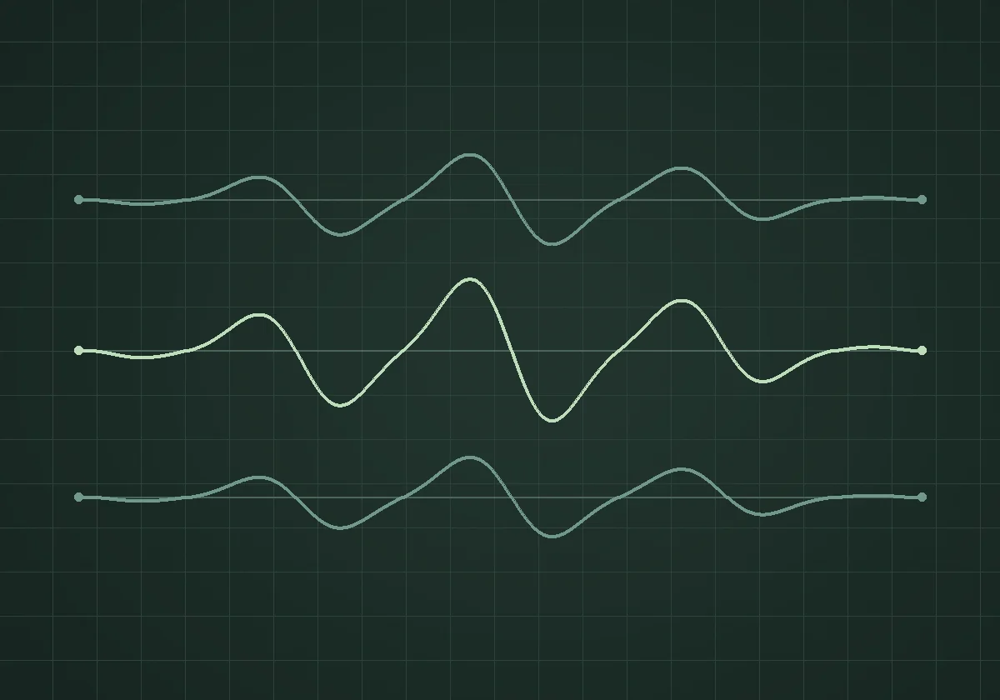

Shanghai Jiao Tong University · Research project · 2024–2025
Wearable Stimulation Prototype
Embedded electronics for a compact galvanic vestibular stimulation device.

Device and firmware
I helped develop a compact wearable galvanic vestibular stimulation prototype for sleep research. My work included selecting core components and programming firmware to adjust the stimulation signal. The prototype supported Bluetooth communication and adjustable current, frequency, and waveform.
Yiwen Gao · Supervisor: Guangye Li